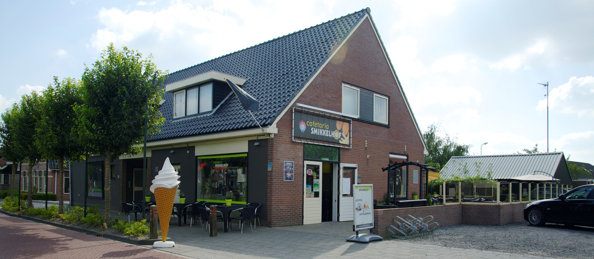
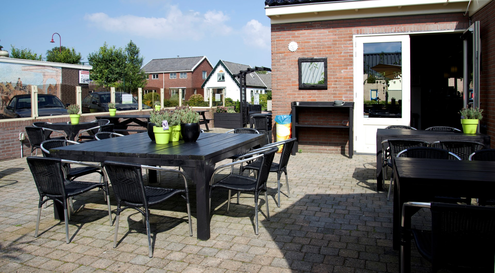
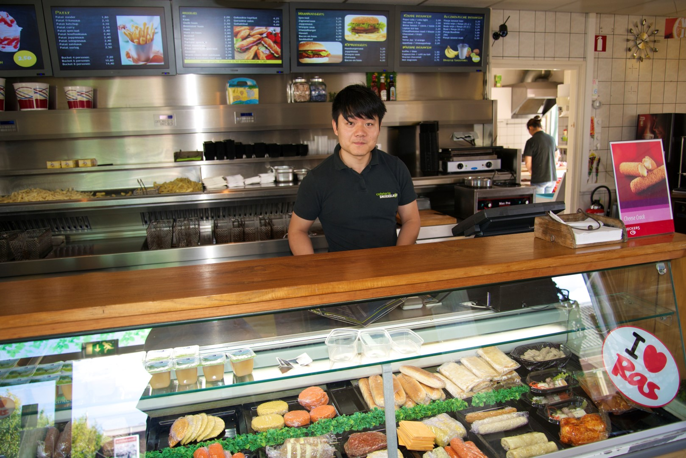
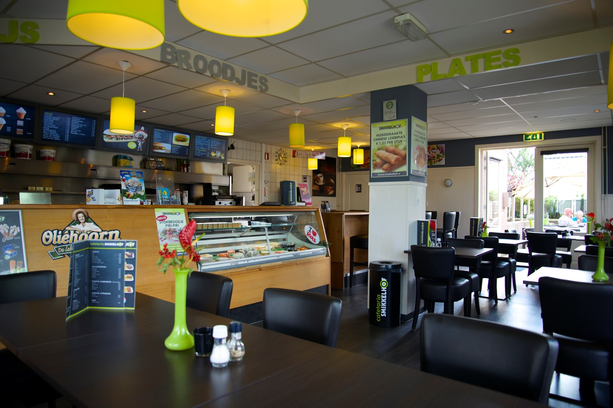
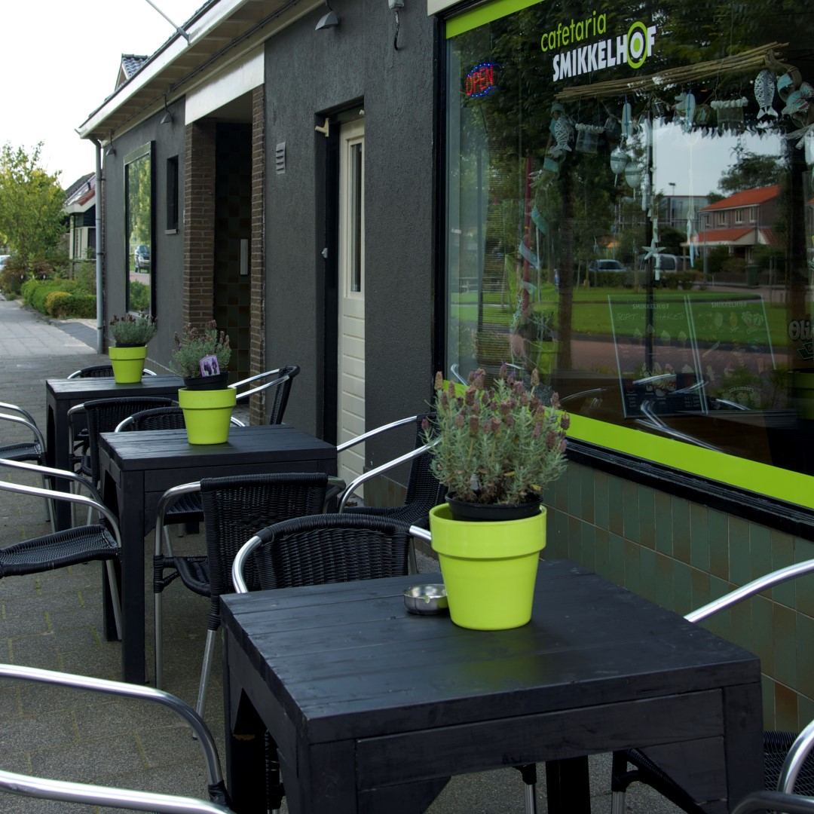

Menu 1
Voor 2 personen
29,95
Biefstukreepjes met Indische ketjapsaus, babi pangang, 6 mini-loempia’s, 2 stokjes saté, cassave kroepoek, met nasi of bami.

Keinsmerweg 46, 't Zand
Smikkelhof is de cafetaria van familie Dong. Zes dagen per week voor de lekkerste patat en snacks, een broodje, Chinees of een softijsje.
Sinds 2013 is de familie Dong een vast begrip aan de Keinsmerweg in 't Zand. Naast onze werkzaamheden in de snackbar houden we ons bezig met:
Voor de lekkere en gezonde trek, ook voor een goed en lekker soft ijsje bent u aan het goede adres. Kom in de zomer kijken op ons vernieuwde terras.
Groeten, Frank en Lucy


Ook tijdens uw verjaardag of feest kunt u rekenen op cafetaria Smikkelhof. Wij verzorgen salades en saladebuffetten voor feesten en partijen. Voor lokale bedrijven kunnen wij ook gerechten verzorgen.
Bedrijven kunnen bij ons terecht voor een compleet verzorgde lunch of maaltijd. We verzorgen graag de lunch of diner voor uw organisatie.
Meer informatie: info@smikkelhof.nl
Familie Dong, trotse eigenaren van Cafetaria Smikkelhof. Per 1 juli 2013 zijn wij, Frank en Lucy Dong, als broer en zus de trotse eigenaren van Cafetaria Smikkelhof in 't Zand. Op 14 augustus 2013 hebben wij de toen al prachtige zaak mogen overnemen van Peter en Tineke, die nu een broodjeszaak (P10) zijn gestart in Schagen.
De zaak zelf was in 2013 al meer dan 30 jaar een begrip aan de Keinsmerweg in 't Zand. Wij zijn zes dagen per week geopend en staan dan ook graag dagelijks voor u klaar om de lekkerste patat en snacks voor u te bereiden.
Patat en snacks worden bij ons gebakken in verantwoord frituurvet en daarnaast serveren wij sinds enige tijd echte ‘ras patat’.
Volg je ons al op Facebook? Dat is zeker de moeite waard, want wij doen één of twee keer in de maand een leuke Facebook-actie, waarbij altijd leuke (eetbare) prijzen zijn te verdienen. Like ons vandaag nog en blijf op de hoogte.


Wekelijks komen er diverse leveranciers bij Smikkelhof over de vloer. Zij brengen de lekkerste patat en snacks. Wij werken alleen met bedrijven die net zoals wij duurzaam ondernemen hoog in het vaandel hebben staan en die hoogwaardige producten leveren.
Zonder verenigingen geen dorp. Daarom vinden wij het belangrijk sportverenigingen uit 't Zand en andere breed gedragen initiatieven, zoveel wij kunnen, te ondersteunen. Op de t-shirts van de voetbalvereniging prijkt dan ook de naam van Smikkelhof en de tennisvereniging kan tijdens het jaarlijkse ‘open toernooi’ rekenen op een heerlijk diner.
| Maandag | Gesloten |
|---|---|
| Dinsdag | 16.00 - 20.00 uur |
| Woensdag | 12.00 - 22.00 uur |
| Donderdag | 12.00 - 22.00 uur |
| Vrijdag | 12.00 - 22.00 uur |
| Zaterdag | 12.00 - 22.00 uur |
| Zondag | 12.00 - 21.00 uur |